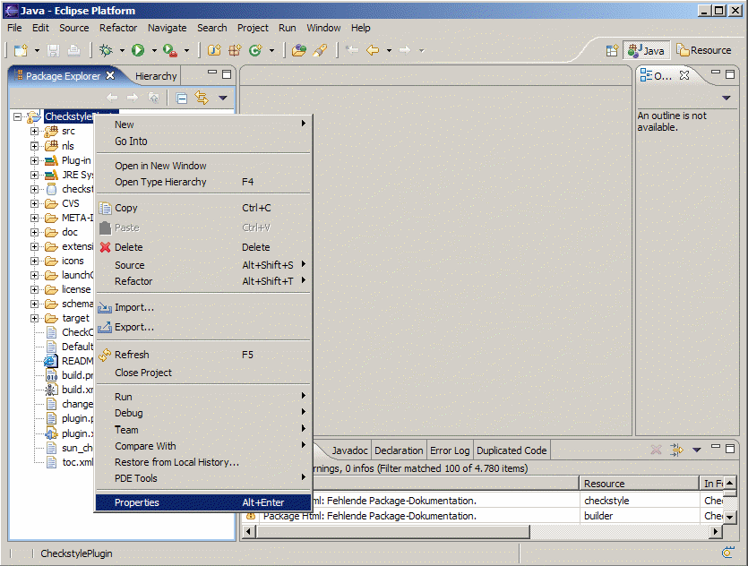
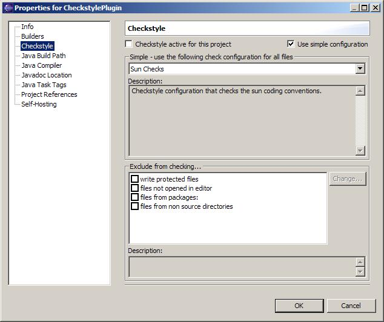

To get your files checked by checkstyle there are a few simple steps set up the checkstyle plug-in for your project.
Open the properties of the project you want to get checked

Select the checkstyle section within the properties dialog

Activate checkstyle for your project by selecting the Checkstyle active for this project checkbox and press OK
Don't mind the other options of the checkstyle project
configuration for now – these will be explained in detail
later.
For starters we are using the Sun Checks
configuration which is built into the plugin. This configuration
contains coding conventions recommended by Sun and widely accepted
standards and best practices.
Now checkstyle should begin
checking your code. This may take a while depending on how many
source files your project contains.
The Checkstyle Plug-in uses
background jobs to do its work – so while checkstyle audits
your source files you should be able to continue your work.
After checkstyle has finished checking your code please look into
your Eclipse Problems View.
The should be some warnings from
checkstyle. This warnings point to the code locations where your code
violates the Sun Checks configuration.

You can navigate to the problems in your code by double-clicking
the problem in you problems view.
On the left hand side of the
editor an icon is shown for each line that contains a checkstyle
violation. Hovering with your mouse above this icon will show you the
problem message.
Also note the editor annotations – they are
there to make it even easier to see where the problems are.
Congratulations!
You
audited your first eclipse project with checkstyle.
Now you surely
want to know how to change the rules for the audit to accomodate your
own (or your companies) coding style.
Read on in the next
chapter.